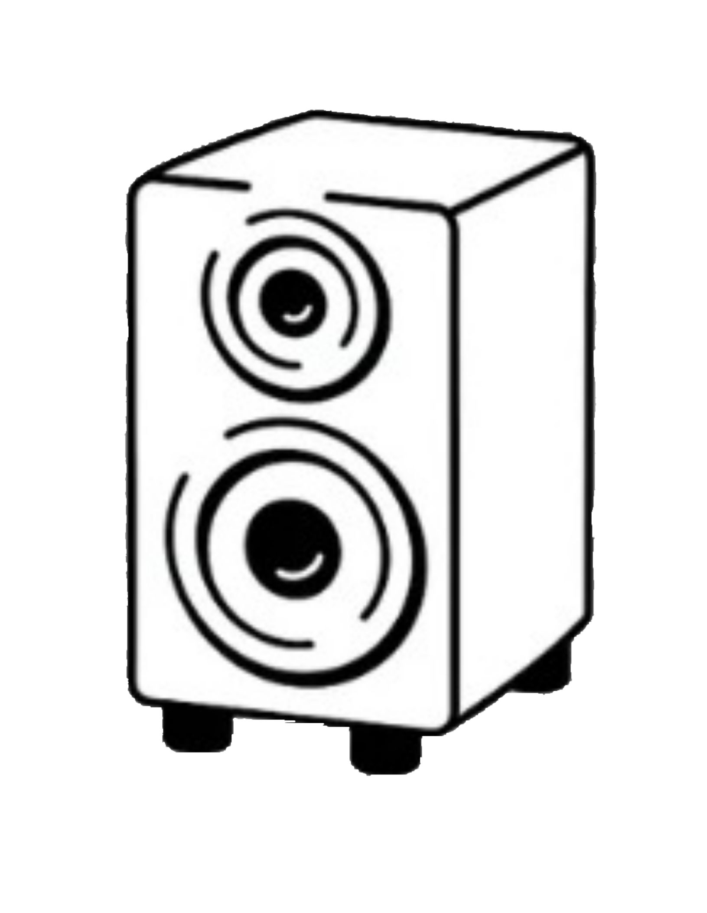
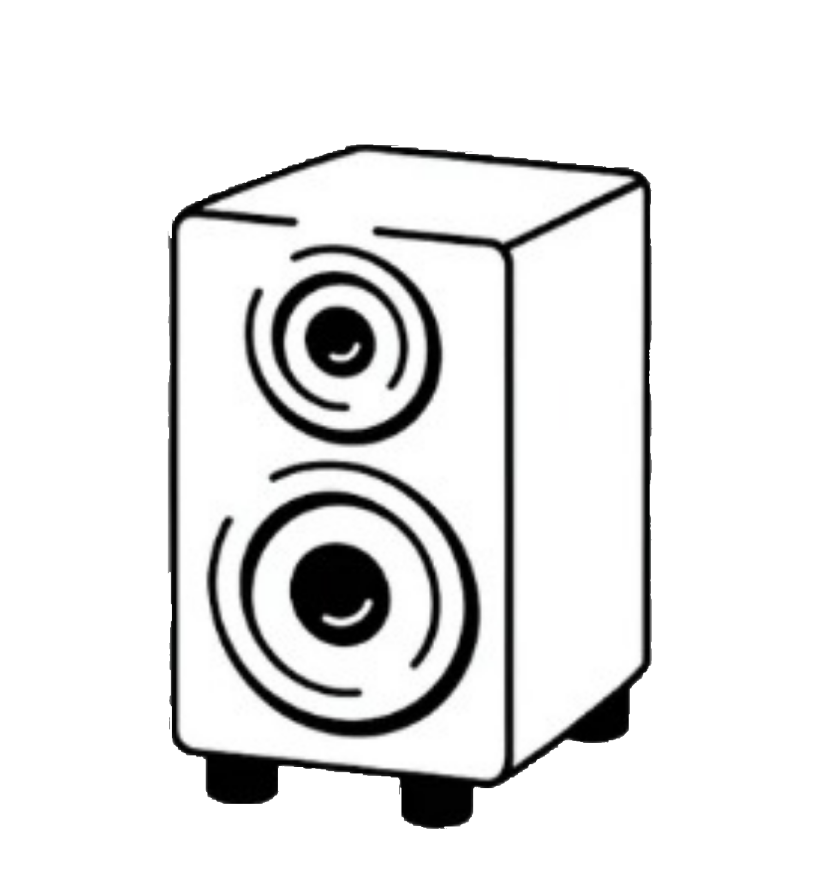
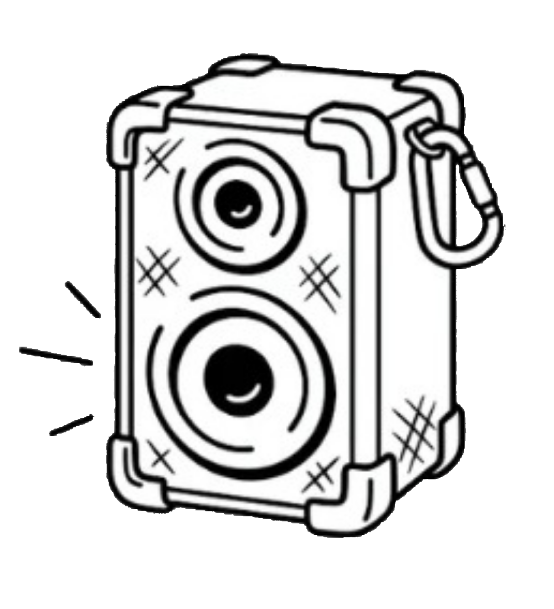
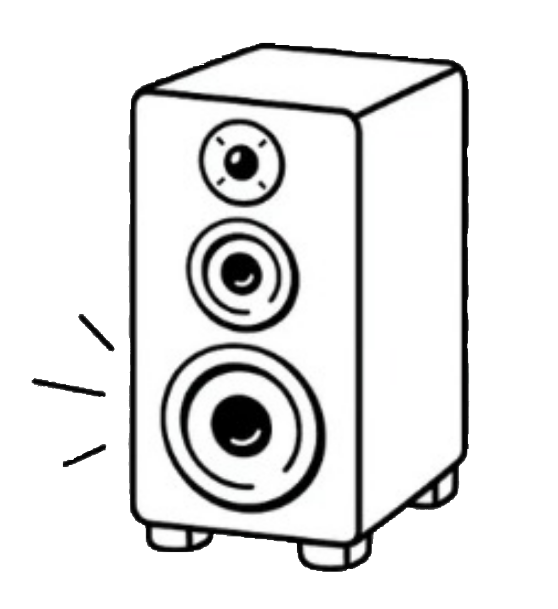

"Sonido gigante en la palma de tu mano"
Compacta, ligera y lista para acompañarte a donde vayas. No te dejes engañar por su tamaño: la Mini ofrece una potencia acústica sorprendente con la máxima portabilidad, ideal para llevar tu música favorita siempre contigo sin cargar de más.
Caja c/12 unidades
$----
"Potencia absoluta para llenar cada espacio"
Cuando se trata de hacerte escuchar, la Max no conoce rivales. Con una presencia imponente y un rendimiento sonoro de gran formato, está diseñada para transformar cualquier espacio en un auténtico escenario con graves profundos y envolventes.
Caja c/4 unidades
$----
"Diseñada para resistir, hecha para sonar sin límites"
Lista para la aventura y los ritmos más exigentes. La Sport combina una estructura robusta con refuerzos protectores y un agarre seguro, garantizándote un rendimiento de audio duradero e imparable sin importar dónde decidas llevar la fiesta.
Caja c/8 unidades
$----
"Precisión acústica y fidelidad de estudio"
Creada para los oídos más exigentes que buscan un equilibrio perfecto. La Pro eleva la experiencia sonora al siguiente nivel con una configuración de múltiples drivers que entregan una nitidez impecable y un control acústico superior en cada frecuencia.
Caja c/6 unidades
$----